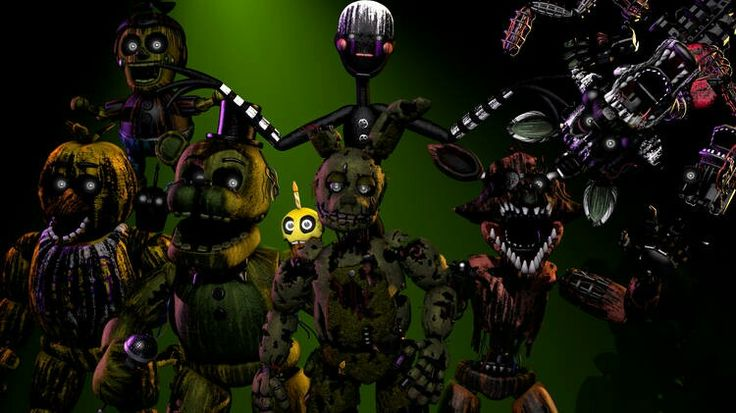
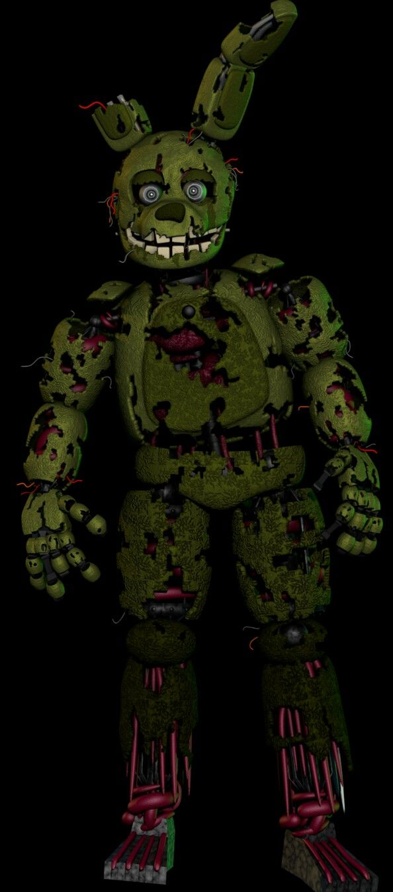
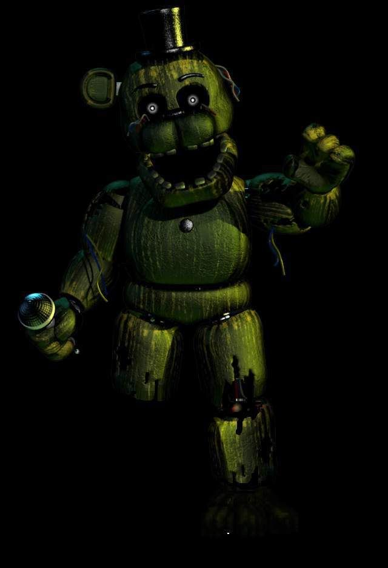
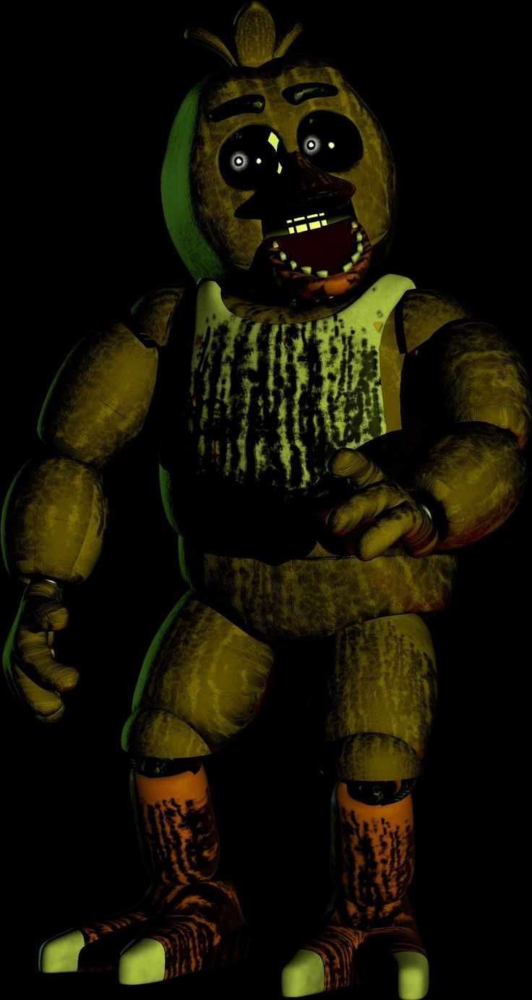
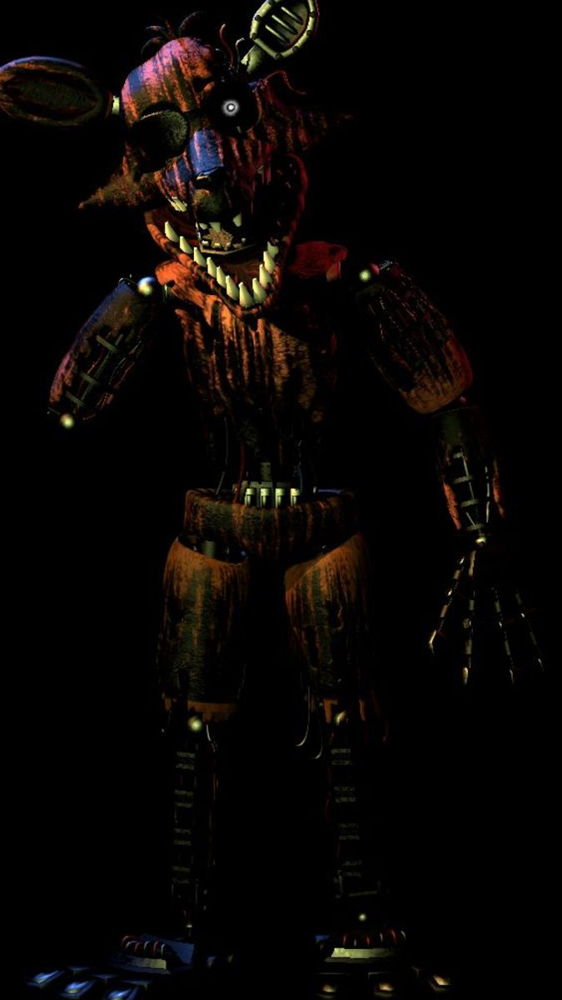
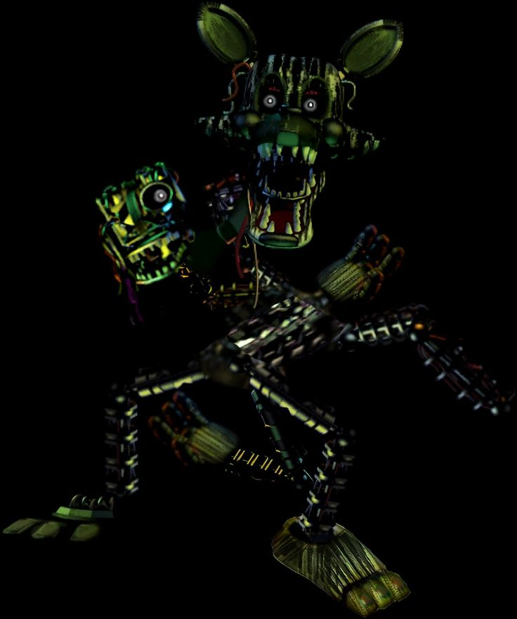
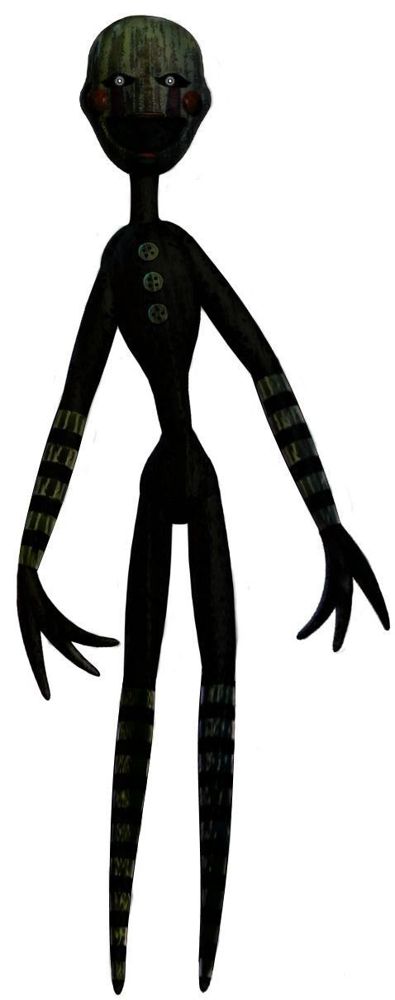
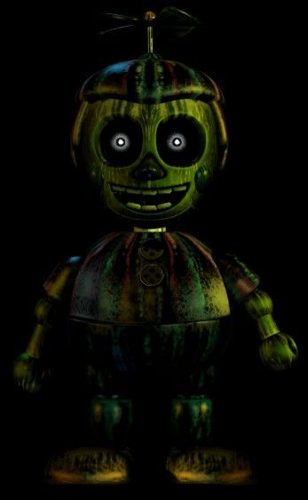

ATENÇÃO
Esta página mostra apenas os personagens do terceiro jogo.

Springtrap é um animatronic coelho que tem uma coloração verde devido ao cadáver de William Afton que apodreceu dentro de seu traje, sendo não apenas o vilão principal do terceiro jogo, mas também, o vilão principal da franquia até o sexto jogo. Springtrap vem do inglês "armadilha de molas", referenciando diretamente a perigosa tecnologia do traje Springlock que prendeu William dentro de si por mais de 20 anos.
PHANTOMS
Fantasmas/Alucinações de animatrônicos que apareceram em jogos anteriores. Não matam o jogador, mas causam algum malfuncionamento em sistemas da Fazbear Frights.

Phantom Freddy é apenas uma recordação distante de um animatrônico que esteve presente em tempos antigos, que vaga pelos cantos mais escuros da atração de terror, mas, apenas aos olhos do jogador. Freddy geralmente aparece caminhando atrás do vidro do escritório de segurança.

Phantom Chica é uma anomalia que pisca na tela de um dos fliperamas antigos, mas que não ataca o jogador diretamente como os outros phantoms.

Aparecendo silenciosamente no canto da sala, Phantom Foxy surge quando o jogador repete o movimento de abrir e fechar as câmeras repetidamente, mas também pode aparecer logo no começo da noite.

Uma memória recente, mas ainda aterrorizante, Phantom Mangle aparece nas câmeras ao redor da atração causando sons ensurdecedores e desaparecendo após um tempo.

Phantom Puppet é uma alucinação um tanto quanto irritante, aparece e tampa a tela do jogador por tempo indeterminado, e desaparece causando erros no sistema de ventilação.

Um resquício de uma irritação passada, Phantom Balloon Boy vai aparecer nas câmeras cobrindo a tela, cujo jogador deve rapidamente fechar o monitor para evitar um jumpscare que danifica o sistema de ventilação.